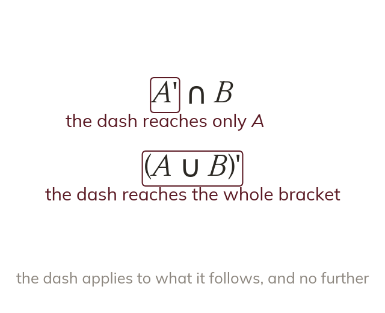

Reading order
Read brackets first, then union and intersect. A dash applies only to what it immediately follows. That is one set, or a whole bracket.
a compound expression is read inside out – brackets first, then union and intersect, with the complement dash applying only to whatever it immediately follows (a single set, or a whole bracket), never to the rest of the expression, and never ignored.